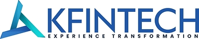
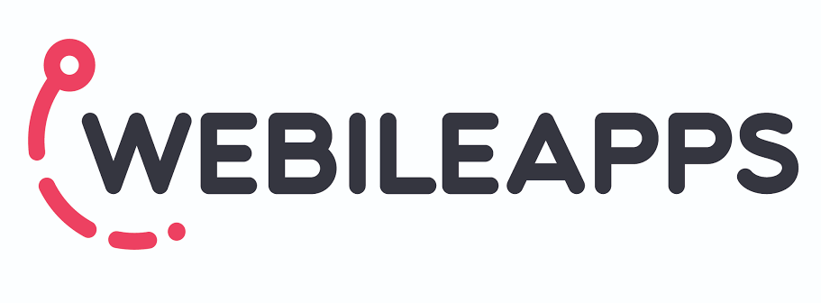

Experience
From Data Pipelines to Machine Learning
JAN 2026 — AUG 2026

Data Engineer
Plymouth Rock Assurance · Boston, MA
Custom-built a 6-state address matching pipeline on AWS SageMaker that matches 2M rows each month against 20M+ records, as a cost-effective alternative to Google APIs and other paid address services. Integrated SAP DQM for address standardization and reduced mismatch rates through systematic pattern analysis.
- Matching NLP and probabilistic models score candidate matches, and K-means clustering filters the top rows down to a near-accurate match.
- Filtering Addresses pass through a 12-layer, multi-stage filtration process grouped into 4 categories, built with waterfall logic in Polars and PyArrow.
- Medallion ETL through bronze, silver and gold layers, delivering partitioned Parquet outputs to S3 at scale.
- Checks AWS Glue checks for new data were slow, so Lambda was used to check the pipeline data instead.
- Orchestrate Explored EventBridge + Lambda to kick off the pipeline, but it made the pipeline more complicated, so moved back to custom SageMaker Pipelines on ml.t3.medium for continuous, low-cost checks.
- Config AWS Secrets Manager and AWS AppConfig manage credentials and data-flow / storage configuration.
- Insights Stakeholder dashboards in HTML, PowerPoint and Datawrapper turned pipeline results into actionable insights for business teams.
AWS SageMaker Pipelines
NLP
Probabilistic Matching
K-means
Polars
PyArrow
SAP DQM
S3
Lambda
AWS Glue
Secrets Manager
AppConfig
Parquet
Datawrapper
AUG 2023 — JUL 2024

Fintech Engineer
KFin Technologies · Hyderabad, India
Designed ETL workflows powering forecasting systems. Created dashboards that cut decision time by 40% — realizing the power of data-driven insights and wanting to push further into ML.
ETL Pipelines
Power BI
Forecasting
Automation
NOV 2022 — AUG 2023

Software Engineer
WebileApps · Hyderabad, India
First exposure to data at scale. Automated collection and cleansing processes, reducing analyst workload by 25%. This sparked my passion for building systems that transform raw data into actionable insights.
Python
Automation
Analytics
Dashboards